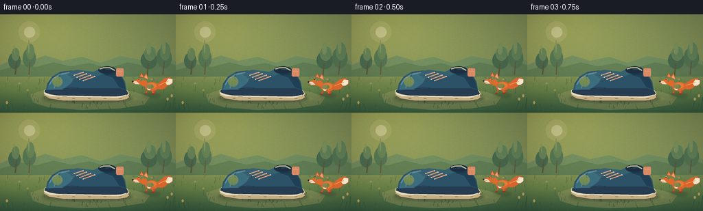
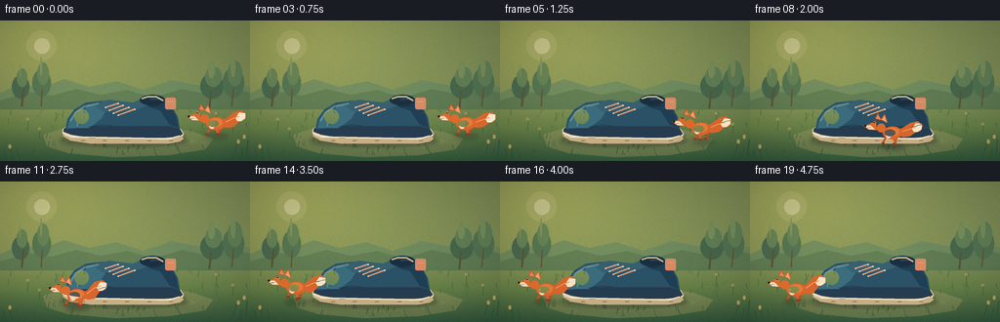

CODING AGENTS AS PIXEL WORLD MODELS
traex/DeepSeek-V4.1-Flash · dynamic_spatial_relationship_0030
点击播放 · 原生 RGB 像素
逐轮保存的候选
回放视频、检查图与代码变化。
每份候选均可单独播放。实际图片检查记录在下方工具轨迹中。
候选 01播放与检查图
点击播放 · 原生 RGB 像素


展开代码变化
--- 上一保存版本
+++ 本次保存版本
@@ -0,0 +1,511 @@
+from __future__ import annotations
+
+import math
+from pathlib import Path
+
+import imageio_ffmpeg
+import numpy as np
+from PIL import Image, ImageDraw, ImageFilter
+
+import artifact_io
+
+
+CASE_DIR = Path(__file__).resolve().parent
+WIDTH, HEIGHT = 256, 144
+FRAMES, FPS = 20, 4.0
+SCALE = 4
+CW, CH = WIDTH * SCALE, HEIGHT * SCALE
+
+
+def rgba(hex_color: str, alpha: int = 255) -> tuple[int, int, int, int]:
+ value = hex_color.lstrip("#")
+ return tuple(int(value[i : i + 2], 16) for i in (0, 2, 4)) + (alpha,)
+
+
+def scaled_box(box):
+ return tuple(round(value * SCALE) for value in box)
+
+
+def scaled_points(points):
+ return [(round(x * SCALE), round(y * SCALE)) for x, y in points]
+
+
+def ellipse(draw, box, fill=None, outline=None, width=1):
+ draw.ellipse(
+ scaled_box(box),
+ fill=fill,
+ outline=outline,
+ width=max(1, round(width * SCALE)),
+ )
+
+
+def polygon(draw, points, fill=None, outline=None, width=1):
+ draw.polygon(
+ scaled_points(points),
+ fill=fill,
+ outline=outline,
+ width=max(1, round(width * SCALE)),
+ )
+
+
+def line(draw, points, fill, width=1, joint="curve"):
+ draw.line(
+ scaled_points(points),
+ fill=fill,
+ width=max(1, round(width * SCALE)),
+ joint=joint,
+ )
+
+
+def rounded_rectangle(draw, box, radius, fill=None, outline=None, width=1):
+ draw.rounded_rectangle(
+ scaled_box(box),
+ radius=round(radius * SCALE),
+ fill=fill,
+ outline=outline,
+ width=max(1, round(width * SCALE)),
+ )
+
+
+def build_background() -> Image.Image:
+ """Painterly meadow with a quiet, low-contrast backdrop."""
+ y = np.arange(CH, dtype=np.float32)[:, None]
+ horizon = 84 * SCALE
+ sky_stops = [
+ (0.0, (91, 150, 164)),
+ (0.48, (160, 195, 187)),
+ (0.82, (235, 204, 155)),
+ (1.0, (244, 217, 169)),
+ ]
+ sky_t = np.clip(y / horizon, 0.0, 1.0)
+ sky = np.zeros((CH, CW, 3), dtype=np.float32)
+ for (p0, c0), (p1, c1) in zip(sky_stops[:-1], sky_stops[1:]):
+ mask = (sky_t >= p0) & (sky_t <= p1)
+ local = (sky_t - p0) / max(p1 - p0, 1e-6)
+ for channel in range(3):
+ sky[:, :, channel] = np.where(
+ mask,
+ c0[channel] + (c1[channel] - c0[channel]) * local,
+ sky[:, :, channel],
+ )
+ base = np.zeros((CH, CW, 3), dtype=np.float32)
+ base[:horizon] = sky[:horizon]
+
+ ground_t = np.clip((y - horizon) / (CH - horizon), 0.0, 1.0)
+ ground_stops = [
+ (0.0, (130, 145, 88)),
+ (0.42, (105, 132, 75)),
+ (1.0, (53, 91, 63)),
+ ]
+ for (p0, c0), (p1, c1) in zip(ground_stops[:-1], ground_stops[1:]):
+ mask = (ground_t >= p0) & (ground_t <= p1)
+ local = (ground_t - p0) / max(p1 - p0, 1e-6)
+ for channel in range(3):
+ base[:, :, channel] = np.where(
+ mask,
+ c0[channel] + (c1[channel] - c0[channel]) * local,
+ base[:, :, channel],
+ )
+
+ # Warm sunlight enters from the upper-left.
+ xs = np.arange(CW, dtype=np.float32)[None, :]
+ glow = np.exp(-(((xs - 40 * SCALE) / (110 * SCALE)) ** 2 + ((y - 12 * SCALE) / (75 * SCALE)) ** 2))
+ base += glow[:, :, None] * np.array([32, 24, 5], dtype=np.float32)
+ image = Image.fromarray(np.clip(base, 0, 255).astype(np.uint8), "RGB").convert("RGBA")
+
+ layer = Image.new("RGBA", (CW, CH), (0, 0, 0, 0))
+ draw = ImageDraw.Draw(layer)
+
+ # Hazy sun.
+ ellipse(draw, (27, 10, 58, 41), fill=(255, 235, 181, 34))
+ ellipse(draw, (35, 18, 51, 34), fill=(255, 243, 203, 116))
+
+ # Layered distant hills.
+ polygon(
+ draw,
+ [(0, 74), (22, 65), (42, 69), (66, 60), (91, 68), (119, 62), (146, 71),
+ (176, 61), (207, 67), (232, 59), (256, 68), (256, 88), (0, 88)],
+ fill=(91, 132, 104, 125),
+ )
+ polygon(
+ draw,
+ [(0, 82), (30, 73), (53, 77), (78, 70), (103, 76), (130, 71), (157, 79),
+ (186, 70), (214, 76), (239, 69), (256, 74), (256, 91), (0, 91)],
+ fill=(74, 112, 83, 150),
+ )
+
+ # Soft tree masses and trunks.
+ trees = [
+ (12, 56, 30, 80, (52, 91, 77, 185)),
+ (33, 50, 52, 78, (64, 105, 82, 175)),
+ (205, 54, 229, 80, (49, 90, 73, 180)),
+ (228, 48, 250, 79, (62, 104, 80, 172)),
+ ]
+ for x0, y0, x1, y1, color in trees:
+ ellipse(draw, (x0, y0, x1, y1), fill=color)
+ ellipse(draw, (x0 + 5, y0 - 7, x1 - 2, y1 - 12), fill=(76, 119, 88, 150))
+ ellipse(draw, (x0 + 8, y0 - 13, x1 - 9, y1 - 21), fill=(112, 144, 96, 115))
+ line(draw, [(24, 70), (22, 88)], (73, 63, 48, 180), 2)
+ line(draw, [(43, 70), (42, 88)], (74, 61, 47, 165), 1.5)
+ line(draw, [(216, 72), (214, 90)], (73, 61, 45, 170), 2)
+ line(draw, [(239, 69), (237, 88)], (76, 62, 47, 160), 1.5)
+
+ # Sunlit clearing under the shoe.
+ polygon(
+ draw,
+ [(44, 117), (63, 111), (103, 108), (155, 109), (195, 113), (218, 121),
+ (210, 132), (173, 138), (117, 140), (70, 136), (48, 129)],
+ fill=(187, 171, 107, 85),
+ )
+ polygon(
+ draw,
+ [(66, 118), (94, 113), (150, 113), (188, 117), (202, 124), (178, 131),
+ (128, 134), (86, 131), (62, 125)],
+ fill=(211, 190, 125, 84),
+ )
+
+ # Midground grasses.
+ rng = np.random.default_rng(7)
+ for _ in range(100):
+ x = float(rng.uniform(3, 253))
+ y = float(rng.uniform(91, 142))
+ length = float(rng.uniform(2.0, 7.5))
+ lean = float(rng.uniform(-2.6, 2.6))
+ color = (43 + int(rng.integers(0, 22)), 83 + int(rng.integers(0, 29)),
+ 53 + int(rng.integers(0, 18)), int(rng.integers(70, 145)))
+ line(draw, [(x, y), (x + lean, y - length)], color, float(rng.uniform(0.5, 1.1)))
+
+ # A few distant seed heads, kept away from the shoe silhouette.
+ for x, y, height in [(28, 113, 12), (40, 120, 9), (221, 108, 13), (238, 116, 10)]:
+ line(draw, [(x, y), (x + 1, y - height)], (57, 92, 56, 150), 0.8)
+ ellipse(draw, (x - 1.6, y - height - 1.6, x + 1.8, y - height + 1.6), fill=(195, 164, 103, 145))
+
+ image = Image.alpha_composite(image, layer)
+
+ # Fine grain and a restrained vignette keep the flat shapes from looking synthetic.
+ arr = np.asarray(image.convert("RGB"), dtype=np.float32)
+ noise_rng = np.random.default_rng(11)
+ noise = noise_rng.normal(0, 2.2, (HEIGHT, WIDTH, 1))
+ noise = np.asarray(Image.fromarray(np.clip(noise + 128, 0, 255).astype(np.uint8)[:, :, 0]).resize((CW, CH), Image.Resampling.BICUBIC))
+ arr += (noise[:, :, None].astype(np.float32) - 128) * 0.55
+ nx = (np.arange(CW, dtype=np.float32) / CW - 0.5)[None, :]
+ ny = (np.arange(CH, dtype=np.float32) / CH - 0.5)[:, None]
+ vignette = 1.0 - 0.19 * np.clip((nx * nx * 1.25 + ny * ny) * 1.85, 0, 1)
+ arr *= vignette[:, :, None]
+ return Image.fromarray(np.clip(arr, 0, 255).astype(np.uint8), "RGB").convert("RGBA")
+
+
+def draw_ground_shadow(image: Image.Image, box, alpha=105) -> Image.Image:
+ shadow = Image.new("RGBA", (CW, CH), (0, 0, 0, 0))
+ draw = ImageDraw.Draw(shadow)
+ ellipse(draw, box, fill=(30, 48, 38, alpha))
+ shadow = shadow.filter(ImageFilter.GaussianBlur(2.2 * SCALE))
+ return Image.alpha_composite(image, shadow)
+
+
+def draw_shoe(image: Image.Image, frame_index: int) -> Image.Image:
+ layer = Image.new("RGBA", (CW, CH), (0, 0, 0, 0))
+ draw = ImageDraw.Draw(layer)
+
+ # The toe points left. Cream outsole, navy upper, coral laces.
+ polygon(
+ draw,
+ [(64, 111), (69, 108), (177, 108), (185, 111), (188, 116), (185, 122),
+ (174, 124), (92, 124), (72, 121), (64, 116)],
+ fill=rgba("#EBD9B8"),
+ )
+ polygon(
+ draw,
+ [(65, 111), (71, 107), (177, 107), (184, 111), (187, 116), (183, 119),
+ (170, 120), (91, 120), (73, 117), (65, 114)],
+ fill=rgba("#263C50"),
+ )
+ polygon(
+ draw,
+ [(65, 117), (73, 120), (174, 122), (185, 118), (188, 121), (184, 124),
+ (173, 126), (92, 126), (72, 123), (64, 118)],
+ fill=rgba("#C7AE84"),
+ )
+ line(draw, [(72, 119), (173, 121), (184, 118)], rgba("#F3E5C7"), 1.15)
+
+ # Main upper and raised heel.
+ polygon(
+ draw,
+ [(67, 111), (69, 101), (76, 91), (88, 84), (105, 82), (121, 85),
+ (132, 89), (143, 82), (153, 78), (164, 79), (175, 86), (182, 99),
+ (184, 111), (174, 108), (91, 108), (73, 111)],
+ fill=rgba("#2B5267"),
+ )
+ polygon(
+ draw,
+ [(69, 110), (71, 102), (78, 93), (90, 86), (104, 85), (112, 87),
+ (103, 101), (91, 110)],
+ fill=rgba("#3B6D7D"),
+ )
+ polygon(
+ draw,
+ [(147, 82), (155, 79), (165, 80), (174, 87), (180, 98), (183, 110),
+ (174, 107), (164, 92), (153, 89)],
+ fill=rgba("#203F54"),
+ )
+ polygon(
+ draw,
+ [(94, 85), (112, 81), (136, 84), (145, 80), (153, 79), (154, 85),
+ (143, 90), (125, 93), (105, 93)],
+ fill=rgba("#376071"),
+ )
+
+ # Collar opening and padded rim.
+ ellipse(draw, (143, 76, 169, 87), fill=rgba("#1A3042"))
+ line(draw, [(145, 80), (151, 78), (160, 78), (167, 82)], rgba("#C5B58E"), 1.7)
+ line(draw, [(147, 85), (155, 88), (166, 87)], rgba("#193445"), 1.0)
+
+ # Toe cap, stitching, and toe highlight.
+ line(draw, [(84, 90), (80, 99), (79, 108)], rgba("#6C9396"), 1.1)
+ line(draw, [(88, 87), (83, 98), (82, 107)], rgba("#1C4054"), 0.75)
+ line(draw, [(91, 109), (104, 107), (115, 108)], rgba("#163747"), 0.8)
+ ellipse(draw, (76, 91, 91, 106), fill=(96, 147, 151, 34))
+
+ # Laces.
+ for x0, y0, x1, y1 in [
+ (108, 89, 121, 85),
+ (112, 92, 126, 87),
+ (116, 95, 132, 89),
+ (121, 97, 138, 91),
+ ]:
+ line(draw, [(x0, y0), (x1, y1)], rgba("#E9936D"), 1.35)
+ line(draw, [(x0 + 1, y0 - 1), (x1, y1 - 1)], rgba("#FFD1A9", 185), 0.45)
+ for x, y in [(108, 89), (112, 92), (116, 95), (121, 97), (121, 85), (126, 87),
+ (132, 89), (138, 91)]:
+ ellipse(draw, (x - 0.85, y - 0.85, x + 0.85, y + 0.85), fill=rgba("#E6D6AD"))
+
+ # Heel tab and sole treads.
+ rounded_rectangle(draw, (169, 79, 180, 91), 2.0, fill=rgba("#D98A64"))
+ line(draw, [(171, 83), (178, 83)], rgba("#FFD5B3", 170), 0.55)
+ for x in [83, 105, 128, 151, 173]:
+ line(draw, [(x, 123), (x + 4, 123)], rgba("#846F58", 185), 0.75)
+
+ # Soft reflected light from the left.
+ highlight = Image.new("RGBA", (CW, CH), (0, 0, 0, 0))
+ hd = ImageDraw.Draw(highlight)
+ line(hd, [(72, 103), (77, 94), (86, 88), (101, 85)], (169, 210, 203, 80), 2.2)
+ line(hd, [(154, 81), (161, 80), (168, 82)], (195, 219, 202, 58), 0.9)
+ layer = Image.alpha_composite(layer, highlight)
+ return Image.alpha_composite(image, layer)
+
+
+def draw_fox(image: Image.Image, center_x: float, center_y: float, run_phase: float,
+ running: bool, bob: float = 0.0) -> Image.Image:
+ """Draw a left-facing fox; all dimensions are in final-frame pixels."""
+ cx, cy = center_x, center_y + bob
+ layer = Image.new("RGBA", (CW, CH), (0, 0, 0, 0))
+ draw = ImageDraw.Draw(layer)
+
+ if running:
+ swing = math.sin(run_phase)
+ lift = math.cos(run_phase)
+ else:
+ swing = 0.0
+ lift = 0.0
+ tail_wag = math.sin(run_phase * 0.55) * 2.2
+
+ # Bushy tail, with a white tip.
+ tail = [
+ (cx + 5, cy + 4),
+ (cx + 11, cy + 1),
+ (cx + 18, cy - 5 + tail_wag),
+ (cx + 26, cy - 7 + tail_wag),
+ (cx + 31, cy - 3 + tail_wag),
+ (cx + 29, cy + 3 + tail_wag),
+ (cx + 23, cy + 5 + tail_wag),
+ (cx + 18, cy + 10),
+ (cx + 11, cy + 11),
+ (cx + 5, cy + 8),
+ ]
+ polygon(draw, tail, fill=rgba("#D8652D"))
+ tip = [
+ (cx + 24, cy - 5 + tail_wag),
+ (cx + 30, cy - 4 + tail_wag),
+ (cx + 30, cy + 1 + tail_wag),
+ (cx + 26, cy + 4 + tail_wag),
+ (cx + 22, cy + 4 + tail_wag),
+ (cx + 20, cy + 1 + tail_wag),
+ ]
+ polygon(draw, tip, fill=rgba("#F5E5C8"))
+ line(draw, [(cx + 10, cy + 5), (cx + 18, cy + 1 + tail_wag), (cx + 24, cy - 1 + tail_wag)],
+ rgba("#F29A55"), 1.0)
+
+ # Legs. Back legs first, front legs after the body.
+ stride = swing * 3.2 if running else 0.0
+ back_a = (cx + 6 - stride, cy + 10, cx + 3 - stride * 0.55, cy + 17 - max(0, lift) * 1.4)
+ back_b = (cx + 3 + stride * 0.65, cy + 10, cx + 1 + stride * 0.8, cy + 17 + max(0, -lift) * 1.2)
+ front_a = (cx - 5 - stride * 0.75, cy + 9, cx - 9 - stride, cy + 17 - max(0, -lift) * 1.5)
+ front_b = (cx - 1 + stride * 0.5, cy + 9, cx + 2 + stride * 0.9, cy + 17 + max(0, lift) * 1.2)
+ for x0, y0, x1, y1, color, width in [
+ (*back_a, rgba("#B94D26"), 2.1),
+ (*back_b, rgba("#C9582A"), 2.0),
+ (*front_a, rgba("#C45526"), 1.9),
+ (*front_b, rgba("#D4652E"), 2.0),
+ ]:
+ line(draw, [(x0, y0), (x1, y1)], color, width)
+ ellipse(draw, (x1 - 1.4, y1 - 0.8, x1 + 1.8, y1 + 1.2), fill=rgba("#8E3B22"))
+
+ # Body, shoulder, and cream chest.
+ ellipse(draw, (cx - 10, cy, cx + 10, cy + 13), fill=rgba("#D8652D"))
+ ellipse(draw, (cx - 7, cy + 1, cx + 7, cy + 10), fill=rgba("#E67A36"))
+ ellipse(draw, (cx - 7, cy + 4, cx - 1, cy + 12), fill=rgba("#F1DCC0"))
+ ellipse(draw, (cx - 8, cy + 3, cx + 3, cy + 10), fill=(255, 170, 92, 60))
+
+ # Neck and pointed head.
+ ellipse(draw, (cx - 16, cy - 3, cx - 7, cy + 6), fill=rgba("#DD6A2D"))
+ polygon(
+ draw,
+ [(cx - 17, cy - 6), (cx - 25, cy - 2), (cx - 30, cy - 1),
+ (cx - 25, cy + 3), (cx - 16, cy + 4)],
+ fill=rgba("#DD6A2D"),
+ )
+ polygon(
+ draw,
+ [(cx - 22, cy - 1), (cx - 29, cy - 1), (cx - 24, cy + 3), (cx - 18, cy + 3)],
+ fill=rgba("#F2DCC0"),
+ )
+ polygon(
+ draw,
+ [(cx - 18, cy - 8), (cx - 15, cy - 14), (cx - 11, cy - 6)],
+ fill=rgba("#C95325"),
+ )
+ polygon(
+ draw,
+ [(cx - 12, cy - 7), (cx - 8, cy - 13), (cx - 5, cy - 4)],
+ fill=rgba("#D75E29"),
+ )
+ polygon(
+ draw,
+ [(cx - 17, cy - 8), (cx - 15, cy - 12), (cx - 12, cy - 7)],
+ fill=rgba("#E88752"),
+ )
+ polygon(
+ draw,
+ [(cx - 11, cy - 7), (cx - 8, cy - 11), (cx - 6, cy - 4)],
+ fill=rgba("#F2A06A"),
+ )
+
+ # Eye, nose, and a tiny cheek mark.
+ ellipse(draw, (cx - 20, cy - 6.1, cx - 17.9, cy - 3.8), fill=rgba("#18252A"))
+ ellipse(draw, (cx - 19.4, cy - 5.7, cx - 18.5, cy - 4.8), fill=(255, 244, 217, 225))
+ ellipse(draw, (cx - 29.1, cy - 1.8, cx - 26.5, cy + 0.2), fill=rgba("#1C2529"))
+ line(draw, [(cx - 25.5, cy + 1.2), (cx - 22.5, cy + 1.0)], rgba("#6D3729"), 0.45)
+
+ # Small speed accents and dust are only present during the run.
+ if running:
+ speed = max(0.0, math.sin(run_phase))
+ for offset, alpha in [(6, 75), (12, 50)]:
+ line(
+ draw,
+ [(cx + 13 + offset, cy + 2 - offset * 0.25),
+ (cx + 19 + offset, cy + 1 - offset * 0.25)],
+ (246, 224, 174, int(alpha * speed)),
+ 0.65,
+ )
+ return Image.alpha_composite(image, layer)
+
+
+def draw_foreground(image: Image.Image, frame_index: int) -> Image.Image:
+ layer = Image.new("RGBA", (CW, CH), (0, 0, 0, 0))
+ draw = ImageDraw.Draw(layer)
+ sway = math.sin(frame_index * 0.48) * 1.3
+ # Foreground grasses frame the action without touching either subject.
+ blades = [
+ (7, 144, 4, 132, 1.2), (13, 143, 10, 127, 1.0), (20, 143, 17, 131, 0.8),
+ (238, 144, 243, 126, 1.1), (246, 143, 249, 130, 0.9), (252, 144, 254, 122, 1.2),
+ ]
+ for x0, y0, x1, y1, width in blades:
+ line(draw, [(x0, y0), ((x0 + x1) / 2 + sway, (y0 + y1) / 2), (x1 + sway, y1)],
+ rgba("#244D39", 195), width)
+ # A few warm seed heads.
+ for x, y in [(10, 129), (244, 124), (250, 119)]:
+ ellipse(draw, (x - 1.5, y - 2.2, x + 1.5, y + 2.2), fill=rgba("#C9A45E", 180))
+ return Image.alpha_composite(image, layer)
+
+
+def ease_in_out(value: float) -> float:
+ return value * value * (3.0 - 2.0 * value)
+
+
+def render_frame(background: Image.Image, frame_index: int) -> np.ndarray:
+ image = background.copy()
+
+ # Ground shadows anchor both objects and establish the foreground run.
+ image = draw_ground_shadow(image, (61, 116, 193, 130), alpha=108)
+ if frame_index <= 3:
+ fox_cx, fox_cy = 221.0, 99.0
+ run_t = 0.0
+ running = False
+ bob = 0.0
+ if frame_index == 1:
+ bob = 0.7
+ elif frame_index == 2:
+ bob = -0.8
+ fox_cx = 220.0
+ elif frame_index >= 15:
+ fox_cx, fox_cy = 47.0, 104.0
+ run_t = 1.0
+ running = False
+ bob = math.sin((frame_index - 15) * 0.65) * 0.35
+ else:
+ run_t = (frame_index - 3) / 11.0
+ eased = ease_in_out(run_t)
+ fox_cx = 221.0 + (47.0 - 221.0) * eased
+ fox_cy = 99.0 + 9.0 * math.sin(math.pi * run_t) + 5.0 * eased
+ running = True
+ bob = -1.6 * abs(math.sin(math.pi * (frame_index - 3) / 2.0))
+
+ shadow_y = fox_cy + 18.0
+ image = draw_ground_shadow(
+ image,
+ (fox_cx - 12, shadow_y - 1.5, fox_cx + 13, shadow_y + 4.5),
+ alpha=84 if running else 66,
+ )
+
+ image = draw_shoe(image, frame_index)
+ phase = (frame_index - 3) * math.pi * 0.82 if running else frame_index * 0.38
+ image = draw_fox(image, fox_cx, fox_cy, phase, running, bob)
+ image = draw_foreground(image, frame_index)
+
+ # A whisper of camera exposure variation makes the short shot feel filmed.
+ arr = np.asarray(image.convert("RGB"), dtype=np.float32)
+ exposure = 1.0 + 0.006 * math.sin(frame_index * 0.7)
+ arr *= exposure
+ final = Image.fromarray(np.clip(arr, 0, 255).astype(np.uint8), "RGB")
+ final = final.resize((WIDTH, HEIGHT), Image.Resampling.LANCZOS)
+ return np.asarray(final, dtype=np.uint8)
+
+
+def write_mp4(frames: np.ndarray) -> None:
+ path = CASE_DIR / "output.mp4"
+ writer = imageio_ffmpeg.write_frames(
+ str(path),
+ (WIDTH, HEIGHT),
+ fps=FPS,
+ codec="libx264",
+ pix_fmt_in="rgb24",
+ pix_fmt_out="yuv420p",
+ output_params=["-crf", "16", "-preset", "medium", "-movflags", "+faststart"],
+ )
+ writer.send(None)
+ for frame in frames:
+ writer.send(frame.tobytes())
+ writer.close()
+
+
+def main() -> None:
+ background = build_background()
+ frames = np.stack([render_frame(background, index) for index in range(FRAMES)])
+ artifact_io.save(frames, CASE_DIR)
+ write_mp4(frames)
+ print(f"Generated {len(frames)} frames at {WIDTH}x{HEIGHT}, {FPS} fps")
+ print(f"Video: {CASE_DIR / 'output.mp4'}")
+
+
+if __name__ == "__main__":
+ main()
可观测工具轨迹
实际执行的命令与返回图片。
命令 1exit 0
/bin/bash -c "pwd && rg --files -g '"'!*__pycache__*'"' -g '"'!*.pyc'"' | sed -n '1,160p'"
命令 2exit 0
/bin/bash -c "printf '%s\\n' '--- prompt.txt ---'; sed -n '1,240p' prompt.txt; printf '%s\\n' '--- GENERATION_RULES.md ---'; sed -n '1,280p' GENERATION_RULES.md; printf '%s\\n' '--- task_spec.json ---'; sed -n '1,280p' task_spec.json"
命令 3exit 0
/bin/bash -c "find . -maxdepth 3 -type f -printf '%p %s bytes\\n' | sort | sed -n '1,200p'; printf '%s\\n' '--- tools ---'; command -v ffmpeg || true; command -v ffprobe || true; command -v python3 || true; command -v blender || true; command -v convert || true"
命令 4exit 0
/bin/bash -c "sed -n '1,280p' artifact_io.py"
命令 5exit 0
/bin/bash -c "python3 - <<'PY'
import numpy, PIL
print('numpy', numpy.__version__)
print('PIL', PIL.__version__)
try:
import imageio
print('imageio', imageio.__version__)
except Exception as e: print('imageio unavailable',e)
PY"命令 6exit 0
/bin/bash -c "find . -maxdepth 2 -type d -printf '%p\\n' | sort"
命令 7exit 0
/bin/bash -c "python3 - <<'PY'
try:
import imageio_ffmpeg
print('imageio_ffmpeg', imageio_ffmpeg.__version__, imageio_ffmpeg.get_ffmpeg_exe())
except Exception as e:
print('unavailable', repr(e))
PY"命令 8exit 0
/bin/bash -c 'python3 generate.py'
命令 9exit 0
/bin/bash -c 'FF=$(python3 -c '"'import imageio_ffmpeg; print(imageio_ffmpeg.get_ffmpeg_exe())'); \""'$FF" -hide_banner -i output.mp4 2>&1 | sed -n '"'1,80p'"
命令 10exit 0
/bin/bash -c "python3 - <<'PY'
from pathlib import Path
import json
import numpy as np
from PIL import Image
root=Path('.')
spec=json.loads((root/'task_spec.json').read_text())
data=np.load(root/'pixels.npz')
print('npz key:', data.files)
print('packed tensor:', data['pixels'].shape, data['pixels'].dtype)
print('png count:', len(list((root/'frames').glob('*.png'))))
frames=[]
for p in sorted((root/'frames').glob('*.png')):
im=Image.open(p)
frames.append(np.asarray(im))
assert im.size==(spec['width'],spec['height']) and im.mode=='RGB', (p, im.size, im.mode)
frames=np.stack(frames)
print('decoded PNG stack:', frames.shape, frames.dtype)
print('pixel range:', int(frames.min()), int(frames.max()), 'mean:', round(float(frames.mean()),2))
print('per-frame mean:', [round(float(x.mean()),1) for x in frames])
print('artifact sizes:', {p.name:p.stat().st_size for p in [root/'output.mp4',root/'pixels.npz',root/'inspection.png',root/'transition_check.png']})
PY"命令 11exit 0
/bin/bash -c 'python3 -m py_compile generate.py && git status --short'
视觉工具实际返回图片 1

保存候选 1 份；完成命令 11 次；可验证图片返回 1 张。原始 API 响应与完整日志保留在本地。